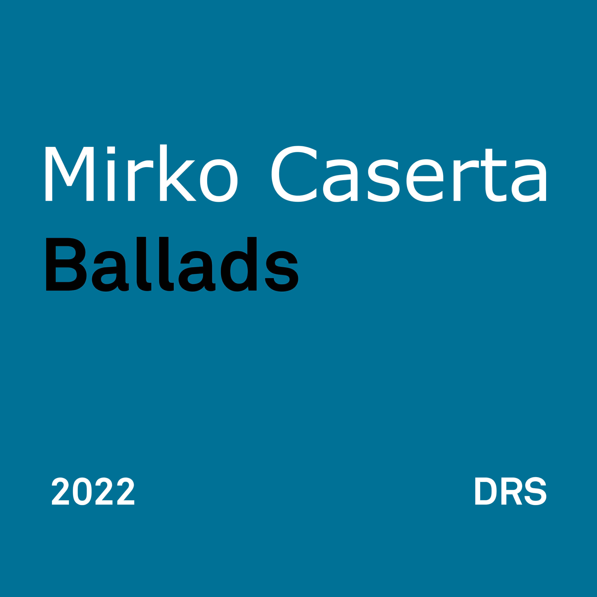

«You can play a shoestring if you're sincere.» — John Coltrane

I have been playing the piano since I was a little kid. Actually, I played the organ first, as my dad had a transistor one that was pretty state of the art for the time (I was born in 1974 so you get the idea).
Anyway, I've been playing keyboards since forever and I've also picked up different instruments over the years, probably too many of them as I never really mastered one.
But black and white keys is what my brain sees when I hear music. I tend to think in piano terms first.
Some people tell me they wish to hear me play the piano more as they don't really enjoy me playing bass or guitar or synths or whatever it is that I'm obsessed with at the moment.
I'm not a good piano player. I'm not even an average piano player. My technique is lacking in so many ways I can't even begin to count them. However, I can maybe hold my own with ballads as they allow me the freedom and the time to think and move things around.
I believe there are many places in this album where you can clearly hear me thinking "well, where do I go now?". That's fine with me. I'm not a professional musician and I don't need everything to be perfect. In fact, there are several places where you can hear me making errors, failing to reach a note or playing something that's not really kosher.
You know what? I don't care. You get to hear what I played with no edits. I want this to be sincere. It might be flawed... well, it definitely is flawed in many ways, but at least it's me you are hearing.
The songs in this album are tunes that have kept me company for years. Except maybe for Lotus Blossom, which I discovered quite recently while watching Field Of Dreams. I have been listening to Jazz all my life and I had to discover this Billy Strayhorn masterpiece through Kevin Costner, can you believe that?
Anyway, I hope you like my very contrieved shoestring playing.
You can listen to Ballads for free by clicking this link.